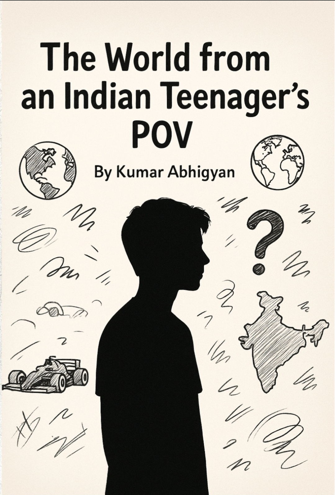
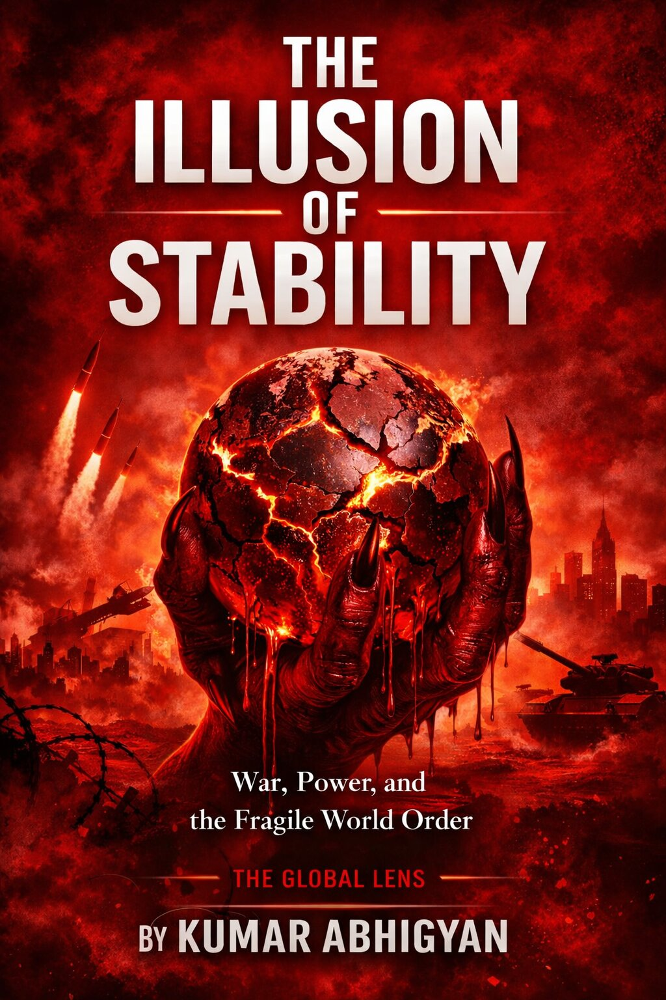

Author ▪ Debater ▪ Political Observer
Kumar Abhigyan (born October 2010) is a young Indian author, writer, and commentator from Jharkhand, India. He writes analytical and data-driven texts reflecting his perspective on the world, society, politics, economics and culture. His work aims to present the thoughts of an Indian teenager in a clear, respectful and critically thoughtful manner.
From an early age, Abhigyan developed a deep curiosity about geopolitics, religion, culture and the dynamics shaping global societies. His writing blends reflection with structured analysis, allowing readers to approach complex issues through the lens of a thoughtful young observer.
He is also recognized for his participation in online debates focused on geopolitics and international affairs, where he has consistently won competitions by presenting clear arguments, persuasive reasoning and well-structured viewpoints.
Beyond intellectual pursuits, Abhigyan enjoys music, motorsports, cooking, exploring new cultures and engaging in discussions that challenge and expand his understanding of the world.

A reflective exploration of global politics, society and culture through the perspective of an Indian teenager seeking to understand the world around him.

An analytical examination of global power structures and the fragile equilibrium sustaining modern stability.
Modern global stability often appears stronger than it truly is. Institutions function, diplomacy operates and economic systems connect nations across continents, creating the impression of a durable international order.
Yet beneath this appearance lies a fragile structure built upon political consensus, economic interdependence and carefully maintained narratives of stability.
When these underlying assumptions weaken, the stability that once seemed permanent can rapidly give way to uncertainty.
Email: abhigyan025@gmail.com
Instagram: @kumar.abhigyan_